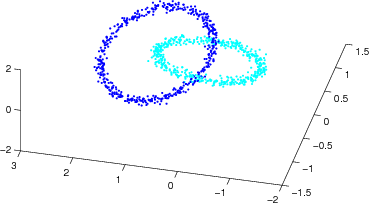
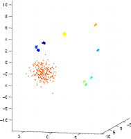

Benchmark Data Sets, Trained Maps, Sample Files
Iris
The Iris data set is one of the best known databases in the machine learning domain, and was first published in [1].
The dataset contains of 3 classes of iris plants, each with 50 instances. The plants are described by four attributes, sepal
length and width, and petal length and width. One class (setoas) is linearly separable from the other two (virginica and
versicolor), while the latter are not linearly separable from each other.
[1] Fisher, R. A. "The use of multiple measurements in taxonomic problems". In Annual Eugenics, 7, Part II, 179-188 (1936)
Boston Housing
This dataset describes housing values in the suburbs of Boston [1]. The dataset contains 506 instances, which are described by 13 attributes. The dataset can be categorised into 92 classes, each representing a district or suburb of Boston.
[1] Harrison, D. and Rubinfeld, D.L. "Hedonic prices and the demand for clean air". In Journal on Environ. Economics & Management, vol.5, 81-102, 1978.
[2] Boston Housing dataset in the UCI Machine Learning Repository
Animals (16 animals)
This data set has been used for several experiments with SOMs. It comprises 16 records of different kinds of animals, described by 13 binary-valued attributes. The animals can be categorised into three classes: birds, carnivores, and herbivores.
[1] Helge Ritter and Teuvo Kohonen: "Self-organizing semantic maps". In Biological Cybernetics, 61(4):241-254. Springer, 1989
Zoo (101 animals)
This data set is similar to the Animals data set above, but contains a larger number of 101 animals. They are described by 20 boolean-valued attributes, and can be categorised into seven different classes.
Spambase
Artificial data sets
Chain link
The chain link data set, sometimes also called intertwined rings, is a classic example of a data set that provokes topology preservation vialitions. The data set contains two rings, each two-dimensional, that are intertwined in a three-dimensional space. When projecting this data set to a two-dimensional output space, the rings have to "break".
10 clusters
This artificial data set consists of data points arranged in 10 distinctive clusters. The clusters were generated from gaussian distributions, with different densities (standard deviations). The data set contains ten dimensions.
Sample properties files
Sample template vector files
Below is a range of sample template vector files that can be used together when analysing music described by the Rhythm Patterns suite of audio features. For more details, please visit the Audio Feature Extraction website of our Music Information Retrieval Group, and check the how-to for feature extraction.